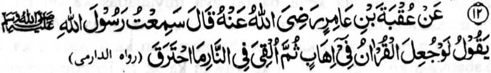

Miyakathitayan ko ‘Uqbah bin ‘Amir (Radhiallaho ‘Anho) na pitharo iyan, “Miyaneg aken so Rasulollah (Sallallaho ‘Alaihi wa Sallam) a gi-i niyan tharo-on, ‘Opama tago-a so Qur’an ko kobal oriyan niyan na totongen ko apoy na di niyan khatotong.’”
So manga Ulama sa hadith, na tiyapsir iran angka-iya a hadith sa dowa a okit:
Si-i ko isa a Hadith na miya-aloy ron a so apoy ko Naraka na di niyan pen khasekho angkoto a tao. Giyangkanan a ika dowa a tapsir angkanan a Hadith na miyabager o isa a Hadith a piyanothol o Abu-Umamah (Radhiallaho ‘Anho) ago misosorat ko kitab a Sharah-ul-Sunnah o Mulla Ali Qari a pitharo iyan, “Langagen niyo so Qur’an, sabap sa so Allah na di Niyan ziksa-an so poso a kadadaleman sa Qur’an.”
Si-i ko manga ma-ana niyan na giyangka-iya Hadith na tanto a marayag ago biyager o Qur’an. So langon o tao a aya katawi ran non na so kilangagen ko Qur’an na da-a kipantag iyan na, sabap ko soa-soat ko Allah, na pamimikirana niyan angka-iya manga kalbihan. Giyangkanan a miya-ori ma-aloy a Hadith na kiyatangka-an den a makasogo ko omani isa ko kisenggay niyan ko ginawa niyan ko kilangagen ko Qur’an, sabap sa da-a isa bo a ba da madosa a baon da mapatot so apoy ko Naraka.
Si-i ko [kitab] a Sharah-ul-Ihya na isosoraton a manga tao a phakasirong ko atag o Limo o Allah sangkoto a piyakalek-lek a Gawi-i a Kaphangokom. Miya-aloy ron a, pitharo o isa a Hadith, a piyanothol o Hadrat ‘Ali (Radhiallaho ‘Anho) a minggolalan ko Dailmi (Rahmatullahi ‘Alaihi) a so manga tao a somisiyap ko Qur’an, ma-ana minilangag iran so Qur’an, na khatago siran sa linding o Allah, a ped iran so manga Nabi ago so manga barasimba a manga tao.